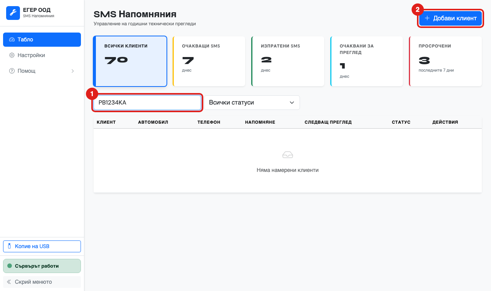
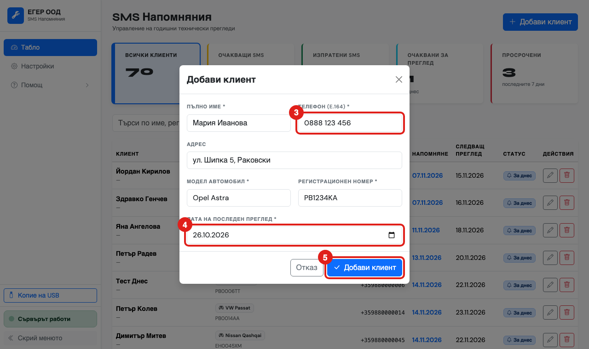
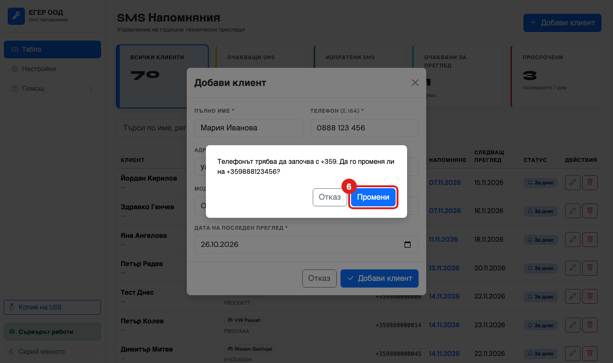

За печат или PDF: натиснете Ctrl + P
Как да добавя клиент
Един автомобил = един клиент в списъка.
Програмата сама смята кога изтича прегледът и кога да пратите SMS.
Вие пишете само датата на последния преглед.
Проверете дали клиентът вече е в списъка

- Напишете номера на колата в полето Търси…. 1
Не сте на таблото? Щракнете „Табло“ в менюто вляво.
- Погледнете таблицата.
Колата вече е в списъка? Не я добавяйте втори път. Променете реда (тема 3).Пише „Няма намерени клиенти“? Продължете със стъпка 3.
- Щракнете синия бутон Добави клиент горе вдясно. 2
Попълнете данните

- Отваря се прозорец „Добави клиент“. В „Пълно име“ напишете името на клиента.
- В „Телефон“ напишете мобилния номер, както го знаете. Например
0888 123 456. 3На този номер отива SMS. Проверете цифрите два пъти. - В „Адрес“ напишете адреса.
Не знаете адреса? Оставете полето празно.
- В „Модел автомобил“ напишете марката и модела. Например
Opel Astra. - В „Регистрационен номер“ напишете номера на колата.
Не са нужни интервали и главни букви. Програмата ги оправя сама: „pb 1234 ka“ става „PB1234KA“.
- В „Дата на последен преглед“ напишете датата на последния ГТП: ден, месец, година. 4
Можете и да щракнете иконата календар вдясно в полето и да изберете деня.
- Щракнете синия бутон Добави клиент долу вдясно. 5
Размислихте? Щракнете Отказ. Нищо не се запазва.
Потвърдете телефона

- Излиза въпрос „Телефонът трябва да започва с +359. Да го променя ли…?“. Щракнете Промени. 6
SMS отива само до номер с +359. Програмата маха първата 0 и слага +359. Написали сте номера с +359? Тогава въпросът не излиза.
- Долу вдясно излиза зелено съобщение Клиентът е добавен.
Готово. Какво стана?
- Клиентът е в таблицата и във файла „клиенти.xlsx“.
- „Следващ преглед“ = датата на последния преглед + 1 година.
- „Напомняне“ = денят за SMS: 7 дни преди „Следващ преглед“. Ако този ден е почивен, напомнянето е по-рано.
- Статусът обикновено е „Очаква“. Клиентът влиза в „Очакващи SMS“ в деня на напомнянето.
- Денят на напомнянето е днес или вече е минал? Статусът е „За днес“. Пратете SMS днес (тема 1).
- Прегледът вече е изтекъл? Статусът е „Просрочен“. На такъв клиент не се праща SMS.
Ако нещо не стане
- Излиза жълто съобщение „Моля, попълнете всички задължителни полета“.
- Едно поле със звезда (*) е празно. Попълнете го. Щракнете пак „Добави клиент“.
- Излиза червено съобщение „… Телефонът трябва да е във вида +359881234567“.
- Номерът е грешен: има буква или липсва цифра. Поправете го. Щракнете пак „Добави клиент“.
- Излиза червено съобщение „… не може да е в бъдещето“.
- Датата на прегледа е след днес. Напишете датата на прегледа, който вече е минал.
- Излиза червено съобщение „… е отворен в Excel“.
- Прозорецът остава отворен с данните. Затворете файла „клиенти.xlsx“ в Excel. Щракнете пак „Добави клиент“.
- Добавихте клиента два пъти.
- Изтрийте единия ред (тема 3).